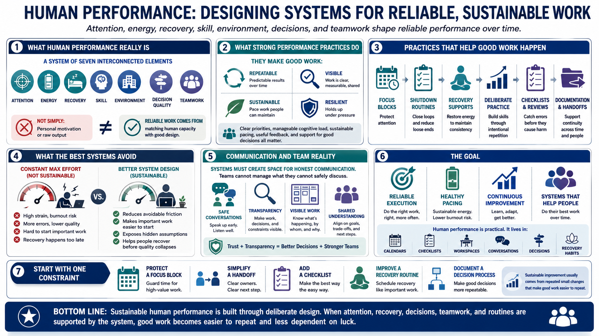

Course Summary and Key Takeaways
Connecting to LMS... Progress: in progress

Narration
Human performance is a system of attention, energy, recovery, skill, environment, decision quality, and teamwork. It is not simply personal motivation or raw output. Reliable work comes from matching human capacity with good design: clear priorities, manageable cognitive load, sustainable pacing, useful feedback, and support for good decisions.
Strong performance practices make good work repeatable, visible, sustainable, and resilient under pressure. Focus blocks protect attention. Shutdown routines close loops. Recovery supports consistency. Deliberate practice builds capability. Checklists and reviews catch errors. Documentation and handoffs help teams keep operating even when conditions change.
The best systems do not rely on constant maximum effort. They reduce avoidable friction, make important work easier to start, expose hidden assumptions, and help people recover before quality collapses. They also create space for honest communication, because teams cannot manage what they cannot safely discuss.
The goal is reliable execution, healthy pacing, continuous improvement, and systems that help people do their best work over time. Human performance is practical. It lives in calendars, routines, checklists, workspaces, conversations, decisions, and recovery habits. When those elements are designed deliberately, performance becomes more sustainable and less dependent on luck.
A useful next step is to choose one performance constraint and improve the system around it. Protect a focus block, simplify a handoff, add a checklist, improve a recovery routine, or document a decision process. Sustainable improvement usually comes from repeated small changes that make good work easier to repeat.